Mise en place d'un DNS recursif + TOTP + ETCKeeper

Sommaire
- Contexte : CUB
- Mise en place d’un serveur DNS Recursif avec redondance
- 1 / Installation – Paramétrage réseau du serveur
- Définir le serveur DNS récursif à utiliser
- 2 / Installation de unbound
- Configuration de unbound
- Le secret partagé TOTP
- Connexion en SSH à mon serveurs DNS
- Versionning
- 1 / Mise en place et prise en main d’etckeeper
- 2 / Initialisation du dépôt
- 3 / Test de l’intégration avec APT
- 4 / Création d’une sauvegarde complète de /etc
- 5 / Test
Mise en place d’un serveur DNS Recursif avec redondance
1 / Installation – Paramétrage réseau du serveur
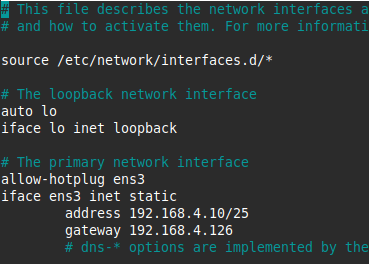
Adapter nos paramètre en fonction de notre contexte.
Définir le serveur DNS récursif à utiliser
nameserver 8.8.8.8
# Lorsque le service Unbound sera opérationnel, remplacer 8.8.8.8 par 127.0.0.1
# et ajouter ensuite le second serveur récursif produit par votre binôme.
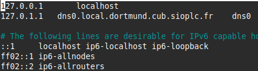
Adapter en fonction de notre contexte.
Il est nécessaire de redémarrer le serveur pour prendre en compte le changement de nom.
2 / Installation de unbound
Configuration de unbound
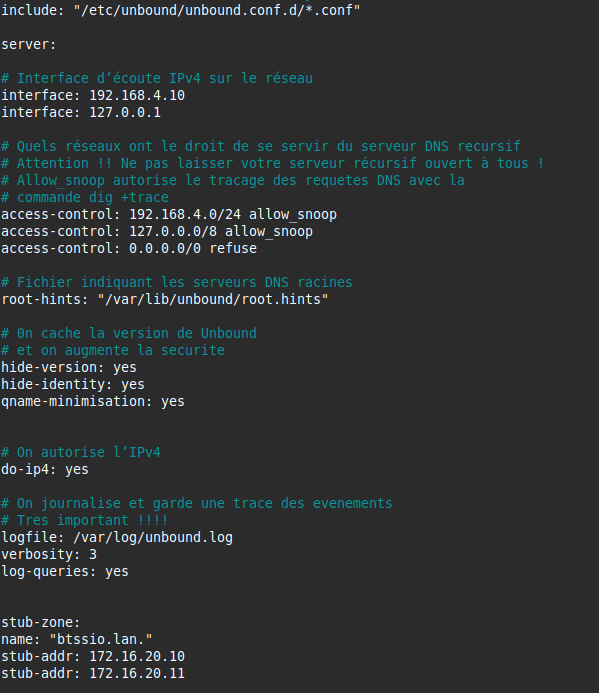
interface: 192.168.4.10 // Adresse IP de notre machine
interface: 127.0.0.1 // Adresse IP local pour le lookback
access-control: 192.168.4.0/24 allow // Autoriser les clients du VLAN 192.168.4.0/24 à interroger le serveur DNS
access-control: 0.0.0.0/0 refuse // Refuser toute requête venant de réseaux non autorisés
On récupère les adresses des serveurs racines et nous les stockons dans le fichier /var/lib/unbound/root.hints :
sudo curl --output /var/lib/unbound/root.hints https://www.internic.net/domain/named.cache
sudo chown -R unbound:unbound /var/lib/unbound/
sudo touch /var/log/unbound.log
sudo chown unbound:unbound /var/log/unbound.log
sudo systemctl restart unbound
sudo systemctl status unbound
2 / Le secret partagé TOTP
HOTP/T30/6 etudiant - 5e7aef3eb075e3905f5a6d15b4ebf94636bb0a81
root@debian:~# oathtool -v -d 6 5e7aef3eb075e3905f5a6d15b4ebf94636bb0a81
Hex secret: 5e7aef3eb075e3905f5a6d15b4ebf94636bb0a81
Base32 secret: LZ5O6PVQOXRZAX22NUK3J27ZIY3LWCUB
Digits: 6
Window size: 0
Start counter: 0x0 (0)
→ Secret partagé : 65f43c705ce51c9c058ec8bb4b7f64b656681866
→ Encodage secret (pour QR) : MX2DY4C44UOJYBMOZC5UW73EWZLGQGDG
→ Nombre de chiffres (Digits) : 6
→ Période (Period) : 30s
3 / Connexion en SSH à mon serveurs DNS
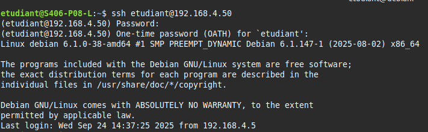
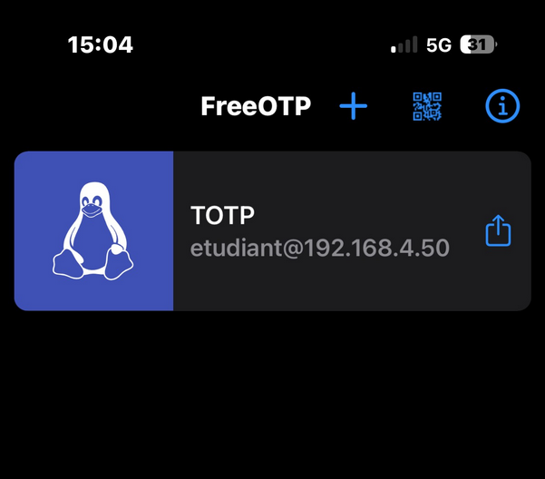
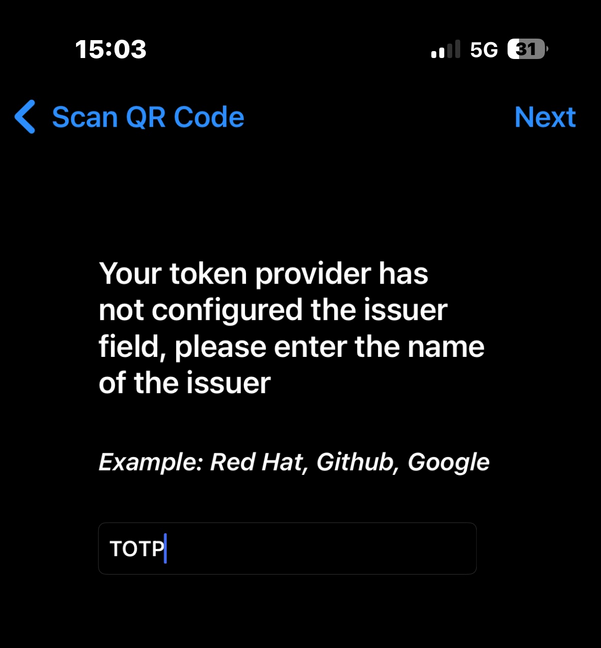
Versionning
1 / Mise en place et prise en main d’etckeeper
J’ai vérifié que Git était bien utilisé comme système de versionnement :
Et j’ai confirmé que la ligne était : VCS="git"
2 / Initialisation du dépôt
Comme il n’était pas encore initialisé, j’ai lancé :
Ça a créé le premier snapshot de /etc avant toute modification.
3 / Test de l’intégration avec APT
J’ai installé un paquet pour voir comment etckeeper gérait les commits automatiques :
Etckeeper a automatiquement créé un commit avant l’installation et un commit après.
4 / Création d’une sauvegarde complète de /etc
Pour sécuriser mes configurations, j’ai fait :
Monter le commit.
5 / Test
- Nous pouvons faire un test en installant apache2 puis vérifier les logs et revenir sur la version d’avant.
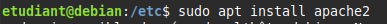
- Puis nous vérifions que etckeeper crée automatiquement un commit après l’installation du paquet.
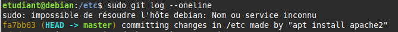
-
Ici nous pouvons voir que les changements dans /etc ont bien été pris en compte.
-
Maintenant je veux restaurer tout le répertoire /etc à une version antérieure.
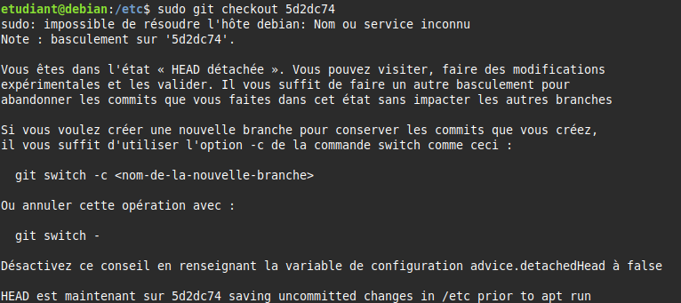
- Ici nous pouvons voir qu’une version antérieure a été restaurée avec git log.
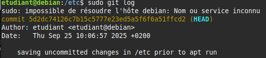
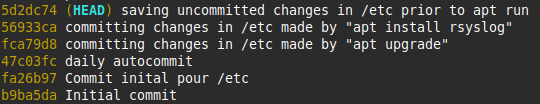